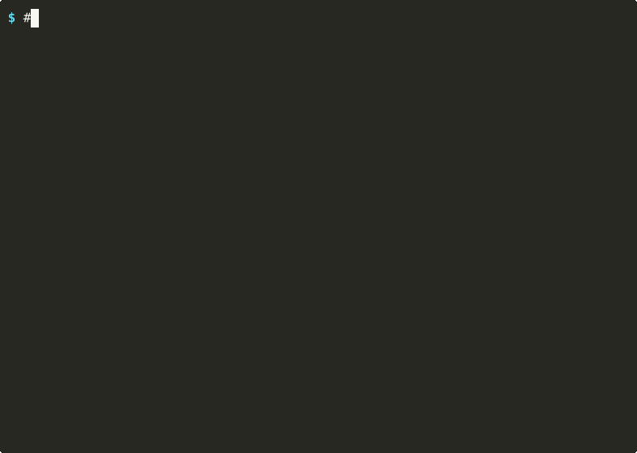
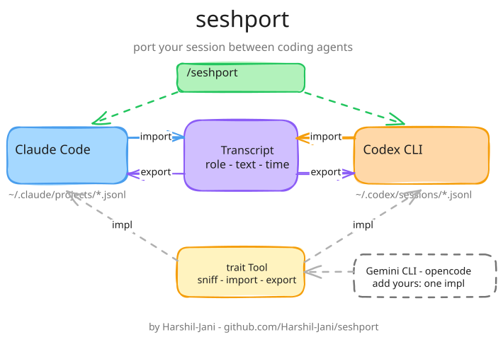

npm i -g seshportseshport ports your session between Claude Code, Codex, and Grok Build. Open the other agent, hit resume, and it remembers everything you said.
or npm i -g seshport · pip install seshport · cargo install seshport · brew install harshil-jani/tap/seshport
the auth bug is in refreshToken() — fix it
Found it: the expiry check compares seconds to
milliseconds. Patched and tests pass.
/seshport
Ported. Resume in Codex with:
codex resume 4f2a…
codex resume 4f2a…
Resuming imported session…
so what was the auth bug again?
The expiry check in refreshToken() mixed seconds
with milliseconds — already patched, tests green.
how it works
Every coding agent keeps its transcript on disk in its own format. seshport translates between them, so the next agent picks up exactly where the last one stopped.
step 1
/seshportMid-conversation, in whichever agent you're using. It ports the current session on the spot.
step 2
You get back one line — codex resume <id> or claude --resume <id>. Open the other agent and paste.
step 3
Full context travels: decisions, tool output, that codeword you planted three hours ago. Verified with real round-trips.

install
under the hood
Sessions flow through one neutral transcript. Each tool implements a small
Tool trait — sniff, import, export — so integrations never touch each other.

contribute
[ your editor here ]
Adding one is a single pull request: implement five methods, drop in a demo fixture, run the tests. The Grok Build integration was added exactly this way — copy its PR.
Read the 5-step guide